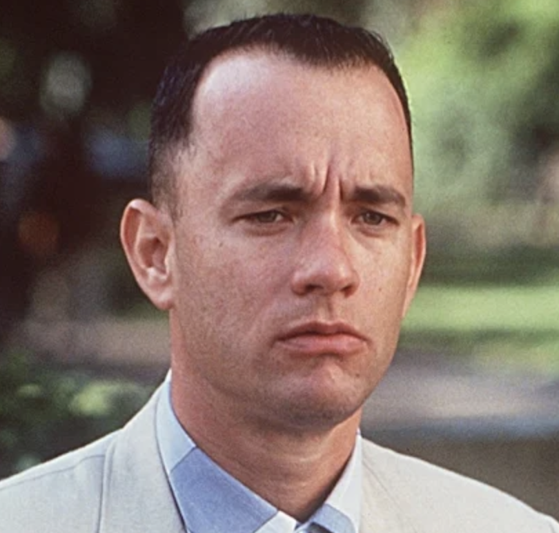
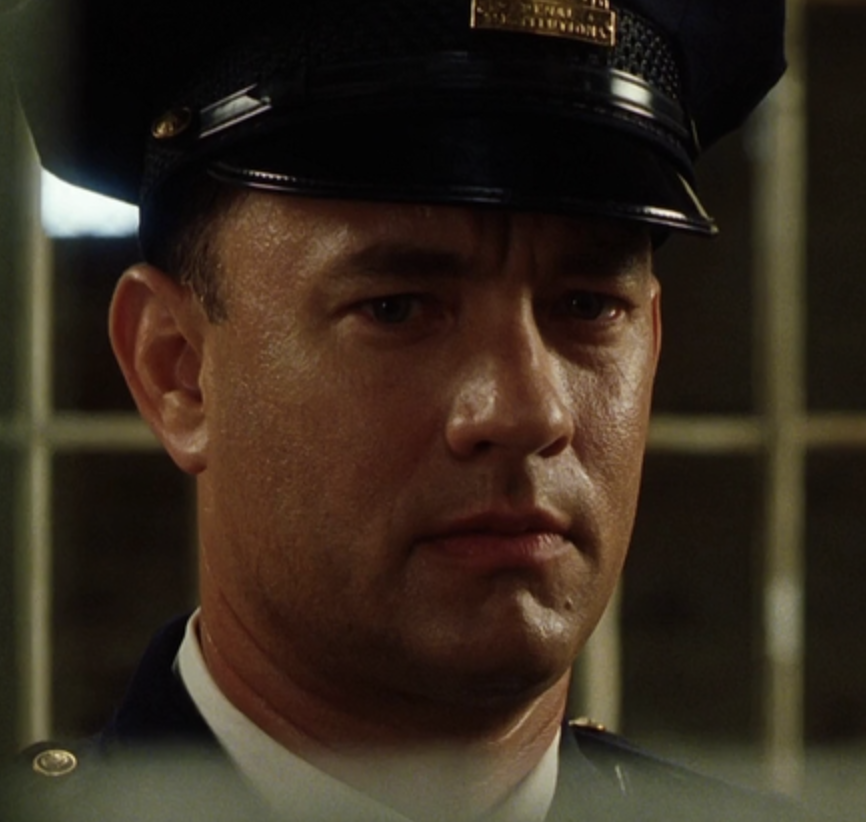
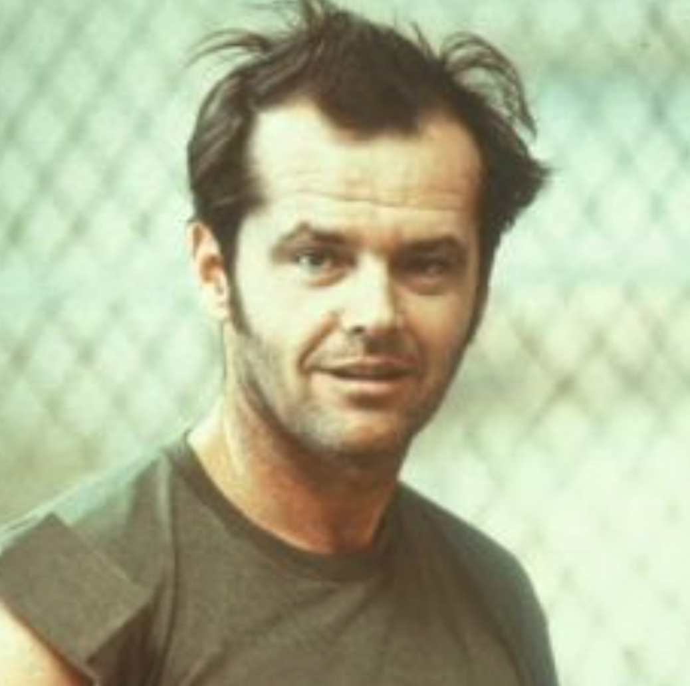

filmy
TOP 20
| Umiestnenie | Názov | Rok | Hodnotenie |
|---|---|---|---|
| 1 |
Vykúpenie z väznice Shawshank
Tim Robbins
|
1994 | 95,3% |
| 2 |
Forest Gump
Tom Hanks
|
1994 | 94,5% |
| 3 |
Zelená míľa
Tom Hanks
|
1999 | 92,9% |
| 4 |
Prelet nad kukaččím hniezdom
Jack Nicholson
|
1975 | 92,5% |
| 5 |
Sedem
Brad Pitt
|
1995 | 92,4% |
| 6 | Schindlerov zoznam | 1993 | 92,3% |
| 7 | Krstný otec | 1972 | 91,8% |
| 8 | Dvanásť rozhnevaných mužov | 1957 | 91,4% |
| 9 | Nedotknuteľní | 2011 | 91,3% |
| 10 | Pelíšky | 1999 | 91,2% |
| 11 | Terminátor: Deň zúčtovania | 1991 | 90,9% |
| 12 | Pulp Fictio | 1994 | 90,7% |
| 13 | Krstný otec II | 1974 | 90,8% |
| 14 | Pán prsteňov: Spoločenstvo Prsteňa | 2001 | 90,5% |
| 15 | Pán prsteňov: Návrat kráľa | 2003 | 90,5% |
| 16 | Mlčanie jahniat | 1991 | 90,5% |
| 17 | Vtedy na Západe | 1968 | 90,5% |
| 18 | Temný rytier | 2008 | 90,3% |
| 19 | Gran Torino | 2008 | 90,3% |
| 20 | The Matrix | 1999 | 90,2% |